RESEARCH & DISCOVERY
Defined the product concept, its constraints, & its users.
- Established technology rules & safety requirements.
- Identified traveler needs & essential content.
- Organized the information architecture & content priorities.
Figma
Adobe Photoshop
Adobe Firefly
Product Designer
UX/UI Designer
Web Designer
Independent Concept Project
Brand Identity
Digital Product Ecosystem
Website & UX/UI
AI-Assisted Visuals
Interactive Prototype
Adobe Firefly imagery
Envato Elements licensed assets & mockups
A fictional technology company.
An impossible product.
A credible digital experience.
Phasepoint Technologies introduces the Chrono Nexus, a fictional device designed for controlled time travel.
The goal was to make this extraordinary concept feel like a sophisticated, credible, thoughtfully designed technology product.
How do you make an impossible technology feel understandable & trustworthy?
Treat time travel like a legitimate technology product, not a science-fiction fantasy.
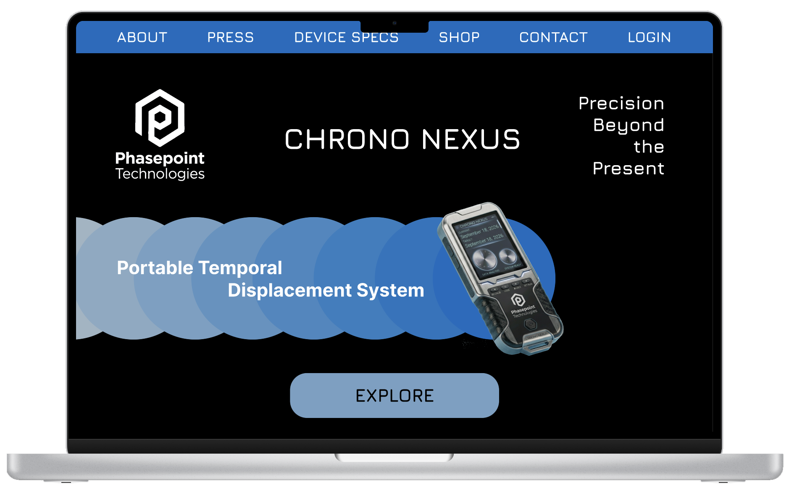
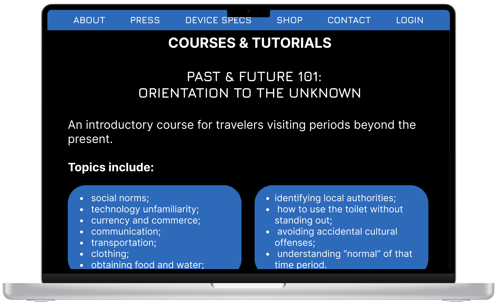
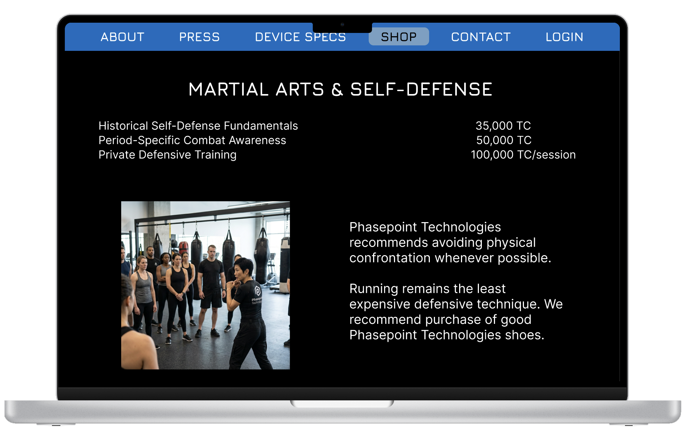
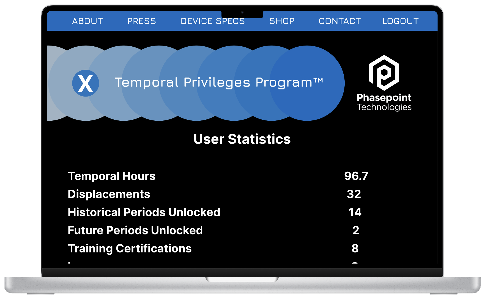
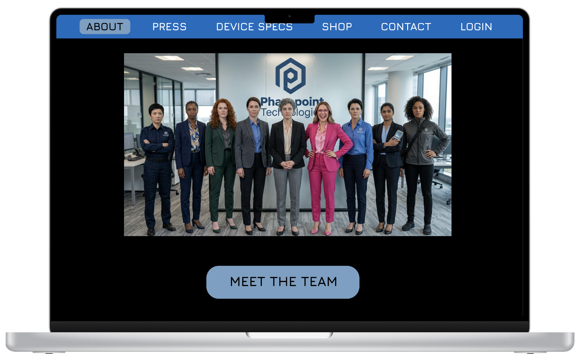
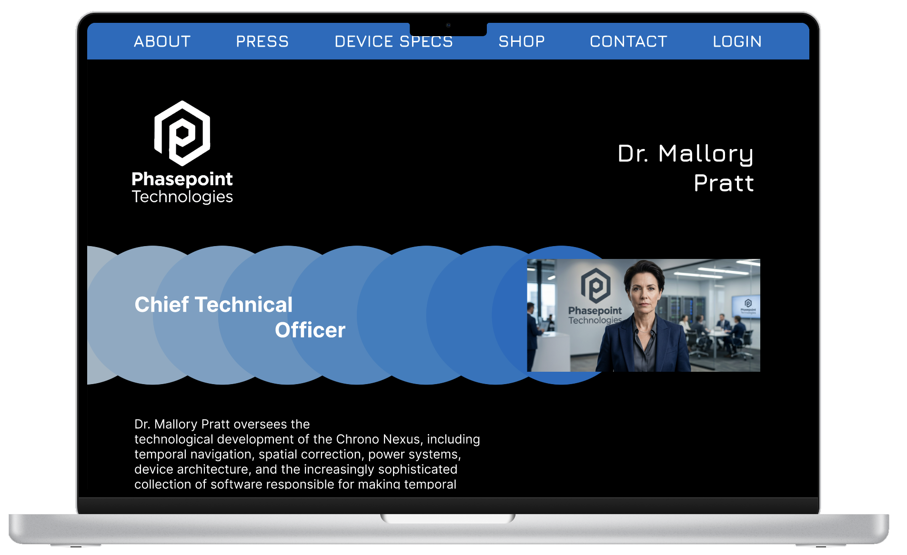
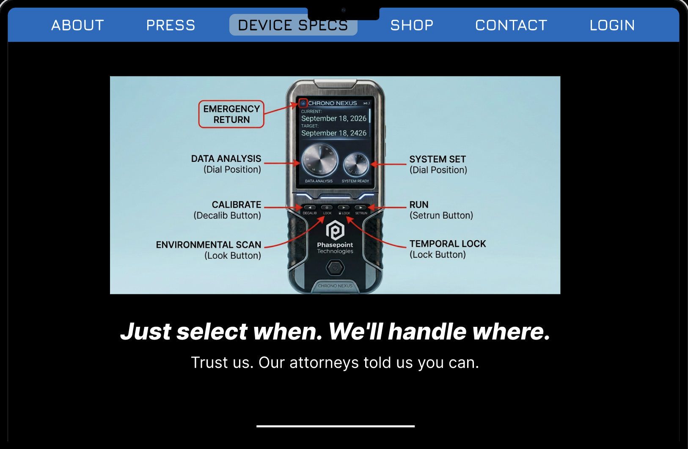
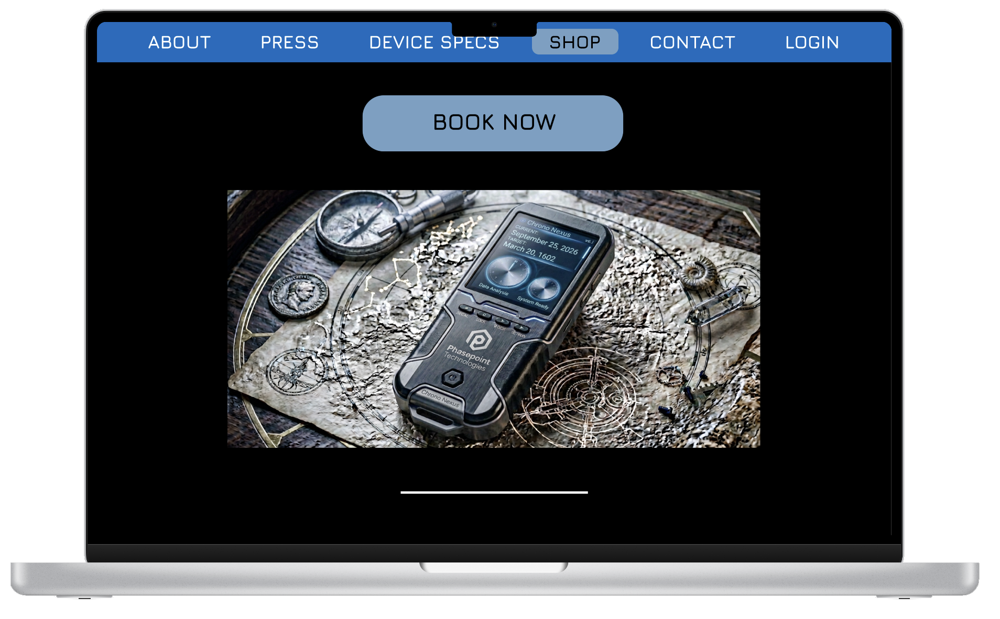
Defined the product concept, its constraints, & its users.

Translated the concept into a connected digital experience.

A cohesive digital ecosystem built around a fictional product.
Making the impossible feel credible.
A dark interface, controlled white & blue accents, geometric forms, & clean typography establish a visual language inspired by aerospace technology & scientific instrumentation.
A recurring circular motif suggests temporal movement, while the structured layouts reinforce precision & clarity. Dry humor appears in the product copy & corporate messaging, adding personality without compromising the professional presentation.
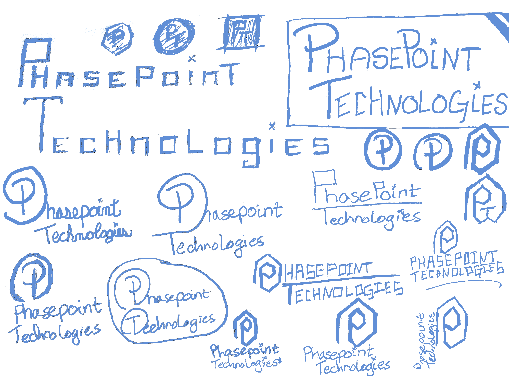
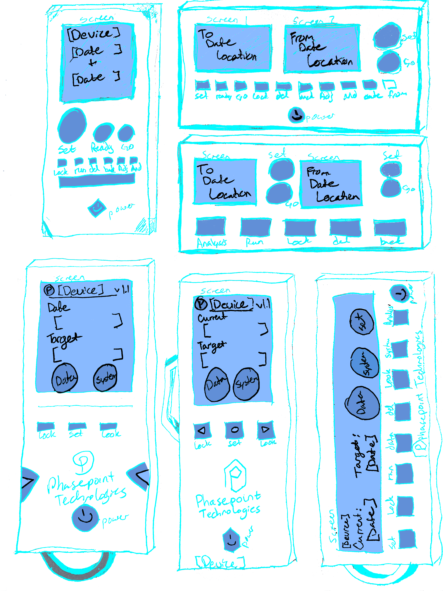
Explore the Phasepoint experience, from product discovery & traveler training to device settings & personal statistics.
View Interactive PrototypeThe user journey connects product discovery, preparation, temporal travel, & ongoing account management.
Explore the device, product features, pricing, & safety requirements.
Access training, language learning, & travel guidance.
Review destinations, travel conditions, & preparation requirements.
Use the Chrono Nexus controls & safety systems during the journey.
Review travel history, statistics, device settings, & account preferences.
Follow the return protocol to reach the designated point in time.
Courses & Tutorials
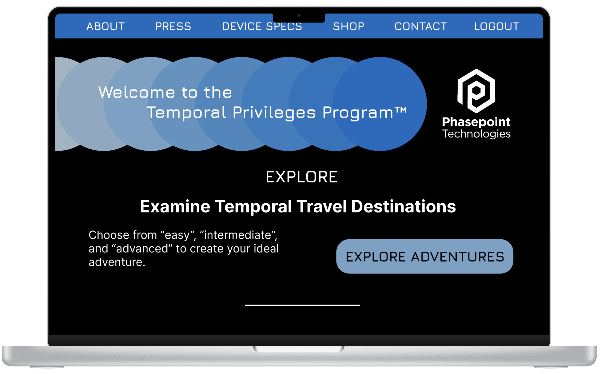
Temporal Privileges Program
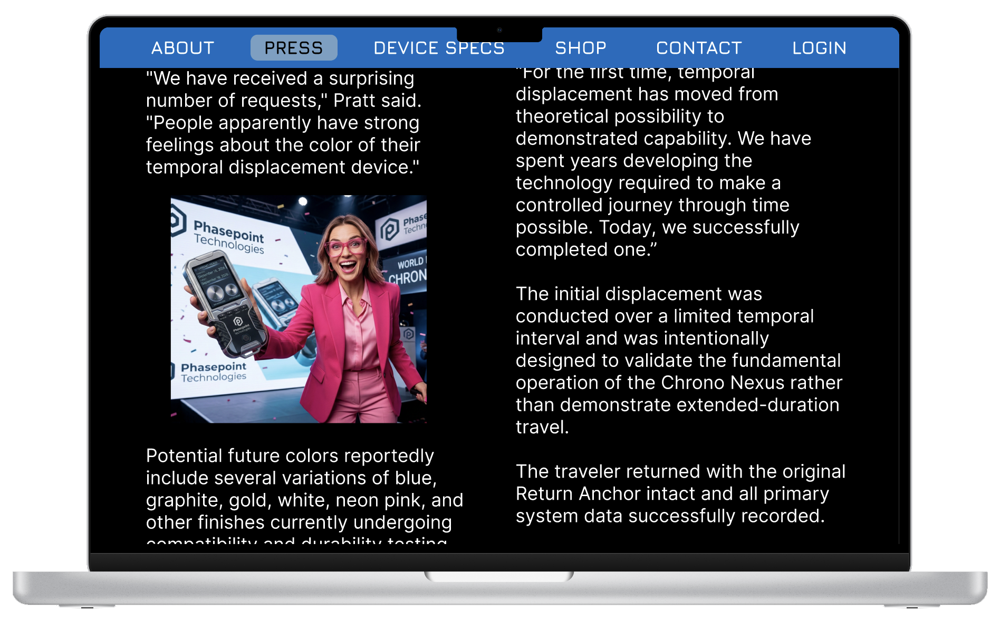
Chrono Nexus Tradeshow Image Used in Press Page
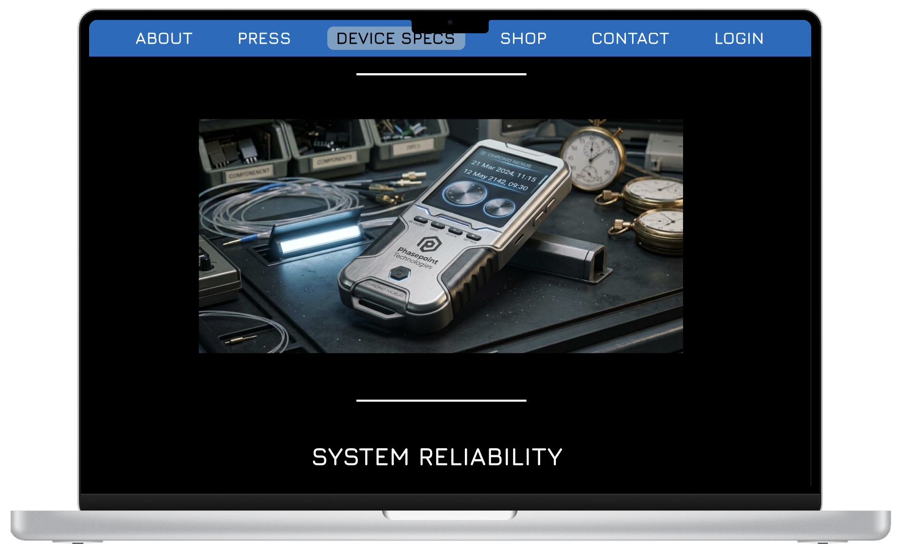
Chrono Nexus Product Render
Why wait for the future? Let's build something great now.
CONTACT ME